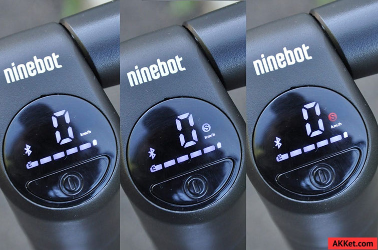

ИНСТРУКЦИЯ на русском языке
Ninebot KickScooter by SEGWAY ES1, ES2, ES4
Одна кнопка управления самокатом.
Короткое нажатие включает Ninebot KickScooter.
Длинное нажатие выключает.
Самокат автоматически выключается через несколько минут бездействия.
Во включённом состоянии короткое одиночное нажатие кнопки включает и выключает передний фонарь.
С левой стороны на руле находится курок электронного тормоза. Справа на руле курок газа.
Ninebot KickScooter оснащён функцией «zero start» – это значит, что прежде чем нажимать на курок газа, необходимо придать самокату начальную скорость, то есть, сделать толчок ногой. И только после этого нажимать на курок.
По центру руля Ninebot KickScooter расположен бортовой компьютер самоката.
Электронный дисплей показывает текущую скорость, уровень заряда батареи (5 делений, каждое – по 20%, мигающее деление – 10%), соединение Bluetooth со смартфоном и режим работы двигателя.
Двойное нажатие последовательно переключает режимы езды, которые обозначаются буквой «S» в кружочке: экономичный режим (буквы «S» нет), стандартный («S» на белом фоне) и спортивный («S» на красном фоне).
В экономичном режиме ограничена скорость езды (ограничение устанавливается через приложение, но не выше 15 км/ч) и интенсивность разгона, зато такой режим позволяет увеличить пробег. В стандартном режиме настройки скорости и ускорения средние, а в спортивном – максимальные, что приводит к заметному снижению максимального расстояния поездки.
Самокат оборудован двумя тормозами: один электронный (передний), другой механический (задний)
Электронный тормоз работает по принципу «включено/выключено», интенсивностью торможения управлять невозможно, можно только управлять длительностью. То есть, чтобы притормозить лишь слегка, надо кратковременно нажать на курок.
Электронный тормоз работает про принципу контр токов: пускает ток на обмотки в «обратном» направлении. Это не рекуперация, при торможении ток потребляется, а не возвращается в батарею. И особенность его в том, что эффект торможения работает только когда есть движение.
Для связи со смартфоном Ninebot KickScooter использует стандартное приложение Ninebot, которое доступно в магазинах Google Play и App Store. При первом подключении потребуется войти с использованием уже существующей учетной записи, либо зарегистрировать новый аккаунт. Без регистрации в приложении самокат не едет.
